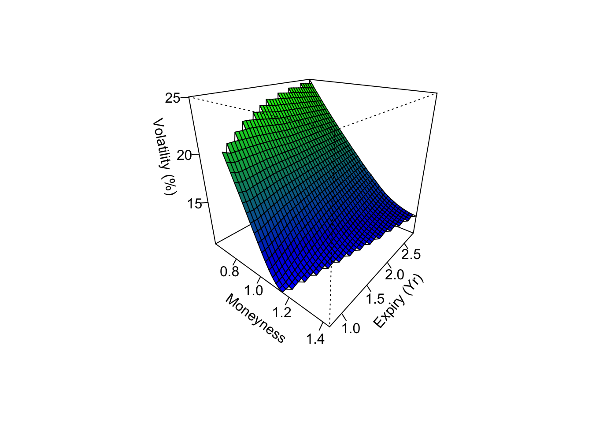

Chapter 2 Volatility Surface
Exotic payoffs can be very sensitive to volatility. The existence of a term and skew structure on the volatility surface implies that an underlying is regarded as having different volatility at different spot or time. The sensitivity to volatility means that our estimation of the price needs to incorporate the entire surface as an input.
Before thinking about the implications of this, we should provide means of producing the surface. One way is to use the market data of option prices on an underlying to reconstruct the implied volatility surface. Below we demostrate how to construct the SPX implied volatility surface using option prices from CBOE.
CBOEhttp://www.cboe.com/delayedquote/quote-table-download provides downloading of delayed option quotes. If we enter SPX as the index ticker we can obtain a table that looks like this:
## Spec PBid PAsk CP Type
## 1 17 Feb 500.00 (SPXW1728B500) 1864.8 1868.5 C Euro
## 2 17 Feb 500.00 (SPXW1728B500-E) 1864.8 1868.5 C Euro
## 3 17 Feb 600.00 (SPXW1728B600) 1764.8 1768.5 C Euro
## 4 17 Feb 600.00 (SPXW1728B600-E) 1764.8 1768.5 C Euro
## 5 17 Feb 700.00 (SPXW1728B700) 1664.8 1668.5 C Euro
## 6 17 Feb 700.00 (SPXW1728B700-E) 1664.8 1668.5 C EuroThe data contains enough information to reproduce an implied volatility that leads to the quoted price of an option.
2.1 Implied vol surface
Generally the market data does not contain sufficient data points, we therefore make a decision to interpolate within the points. Here we create a 40 by 40 equidistance grid of points so that the plot will look smooth.
df_call <- subset(SPX.IV, Type == "C")
df_call$StrikePct = df_call$Strike/df_call$Spot
x <- df_call$StrikePct
y <- as.numeric(df_call$dtExpiry)
z <- df_call$IVMid
s <- interp(x, y, z, nx=40, ny = 40, linear = T)
nrz = nrow(s$z)
ncz = ncol(s$z)
jet.colors = colorRampPalette(c("blue", "green"))
nbcol = 100
color = jet.colors(nbcol)
zfacet = s$z[-1, -1] + s$z[-1, -ncz] + s$z[-nrz, -1] + s$z[-nrz, -ncz]
facetcol = cut(zfacet, nbcol)
TTM <- as.numeric(as.Date(s$y, origin = "1970-01-01") - df_call$dtTrade[1])/365
persp(s$x, TTM, s$z * 100, col = color[facetcol], xlab = "\nMoneyness",
ylab = "\nExpiry (Yr)", zlab = "\nVolatility (%)", theta = 40,
phi = 25, ticktype = "detailed")
From the plot we see the volatility is moving in the opposite direction of moneyness. Moneyness was computed as the strike price divided by the spot price. We can understand also interpret this as the implied volatility being higher when strike price is lower than the spot price.
However this is not always true, there other sections of the surface (further strikes and expiries) where the curvature is differently shaped. That is, in far out (or in) of the region shown above, the shape can be upward sloping instead of downward sloping.
2.2 Local vol surface
TODO: Build LV surface using IV surface. Plot 3d chart. Show fluctuations if IV data points are not smooth.